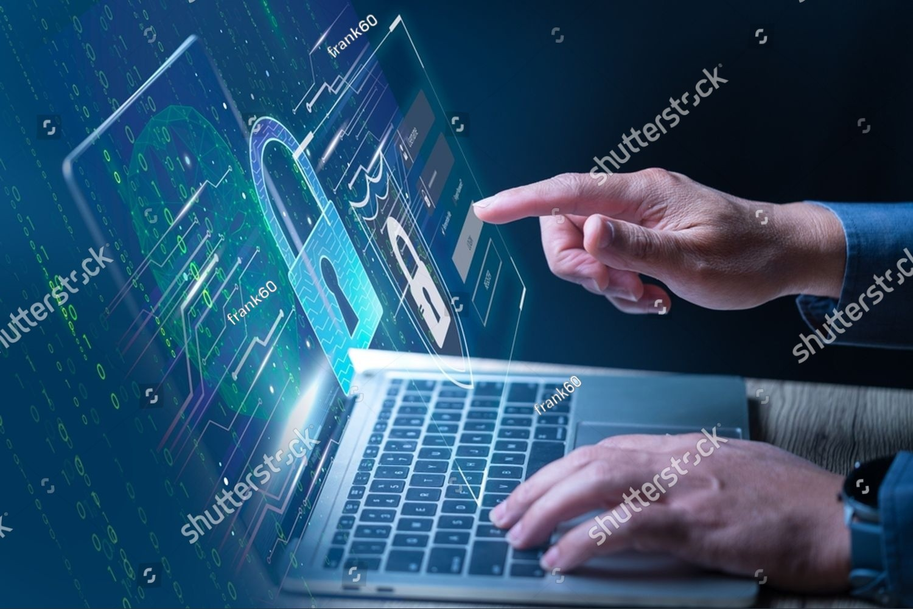

La Cybersécurité
La cybersécurité est l’ensemble des techniques et pratiques mises en œuvre pour protéger les systèmes informatiques contre les attaques, les intrusions et les dommages. Cela inclut la sécurité réseau, la cryptographie, la sécurité des applications, et bien plus encore. La menace constante de cyberattaques rend ce domaine crucial dans notre société numérique.
Pour en savoir plus, visitez cet article sur la cybersécurité.
🔐💻 La cybersécurité : le bouclier invisible de notre monde numérique 🌐🛡️
À l’ère où nos vies, nos entreprises et nos gouvernements reposent sur le numérique, un domaine devient de plus en plus stratégique : la cybersécurité.
La cybersécurité, ce n’est pas juste protéger des fichiers. C’est défendre des systèmes, des données sensibles, des identités numériques et parfois même des vies. C’est un combat silencieux mené par des passionnés de la sécurité, souvent dans l’ombre, mais toujours en alerte.
🔍 Pourquoi la cybersécurité est-elle cruciale aujourd’hui ?
- Parce qu’une simple faille peut coûter des millions ou compromettre une nation entière.
- Parce que la montée des cyberattaques exige des experts formés et éthiques.
- Parce que derrière chaque pare-feu et chaque algorithme de chiffrement, il y a des personnes qui veillent sur notre liberté numérique.
- Parce que la confiance numérique est la base de notre économie, de notre vie privée et de notre avenir connecté.
💡 Se former à la cybersécurité, c’est entrer dans un domaine stratégique, en perpétuelle évolution, où la veille est quotidienne, où chaque détail compte, et où l’éthique est primordiale.
🎯 Ce n’est pas un monde réservé aux hackers de films : c’est un domaine pour les analystes rigoureux, les ingénieurs déterminés, les curieux de technologie et les défenseurs du numérique.
🚀 Alors que l’intelligence artificielle, l’IoT ou la blockchain se développent, la cybersécurité devient leur garde du corps.
🔁 Et toi, que fais-tu pour protéger ton monde numérique ?
#Cybersécurité #SécuritéInformatique #EthicalHacking #ProtectionDesDonnées #CyberDefense #Technologie #FuturNumérique #HackingÉthique